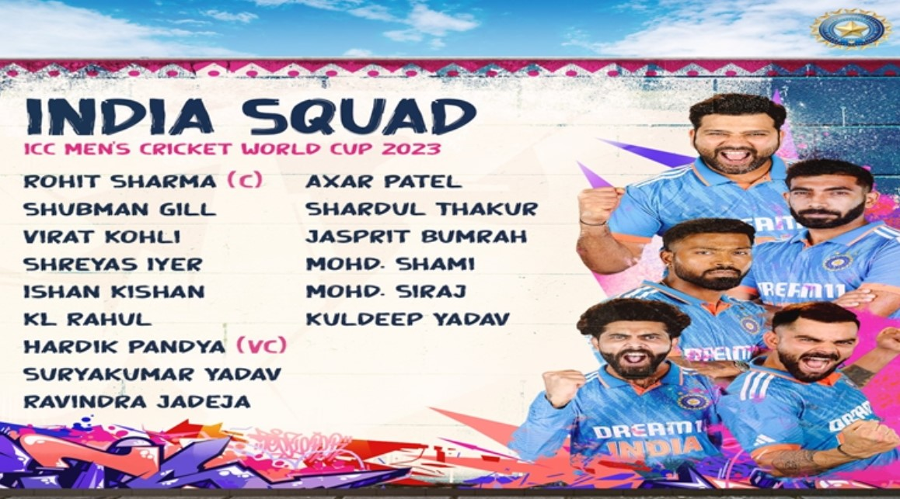

Cricket, often dubbed as the "gentleman's game," is a popular sport played across the globe, particularly in countries like India, Australia, England, and Pakistan. It is characterized by its unique combination of bat and ball, played between two teams of eleven players each on an oval-shaped field. The objective of the game is to score runs by hitting the ball and running between the wickets, while the opposing team tries to dismiss the batsmen and restrict the scoring. Matches can last anywhere from a few hours in the case of Twenty20 cricket to five days in Test matches. Cricket is governed by the International Cricket Council (ICC), which oversees various formats of the game, including Test cricket, One Day Internationals (ODIs), and Twenty20 Internationals (T20Is). It boasts a rich history dating back to the 16th century in England, evolving into a globally celebrated sport with passionate fans and players worldwide. Iconic tournaments such as the Cricket World Cup and the Indian Premier League (IPL) capture the imagination of millions of fans, showcasing thrilling contests between top teams and players. With its blend of strategy, skill, and athleticism, cricket continues to captivate audiences and hold a special place in the sporting landscape.
Indian cricket holds a revered status in the world of sports, epitomizing a nation's passion and fervor for the game. With a rich history dating back to the colonial era, cricket in India has evolved into a cultural phenomenon, uniting millions across diverse backgrounds. From iconic players like Sachin Tendulkar to modern-day stars such as Virat Kohli, Indian cricket boasts a lineage of legendary talents who have etched their names in the annals of the sport. The Indian Premier League (IPL) stands as a testament to the country's cricketing dominance, showcasing electrifying matches and unparalleled entertainment. Cricket in India transcends mere sport, embodying national pride and identity, with fans fervently supporting their teams through victories and defeats alike. The Board of Control for Cricket in India (BCCI) governs the sport with meticulous attention, ensuring the growth and sustenance of cricket at all levels. Cricket stadiums like the Eden Gardens and Wankhede Stadium serve as hallowed grounds, witnessing historic moments and unforgettable matches. The sport's influence extends beyond the boundaries of the field, shaping societal norms and perceptions, making cricket an integral part of the Indian ethos. With a vast talent pool and grassroots initiatives, Indian cricket continues to thrive, promising a bright future filled with glory and accolades on the global stage.
How many World Cups have India won Format Year Captain Final match opponent Final match venue ODI 1983 Kapil Dev West Indies Lord's, London T20 2007 MS Dhoni Pakistan Wanderers Stadium, Johannesburg ODI 2011 MS Dhoni Sri Lanka Wankhede Stadium, Mumbai